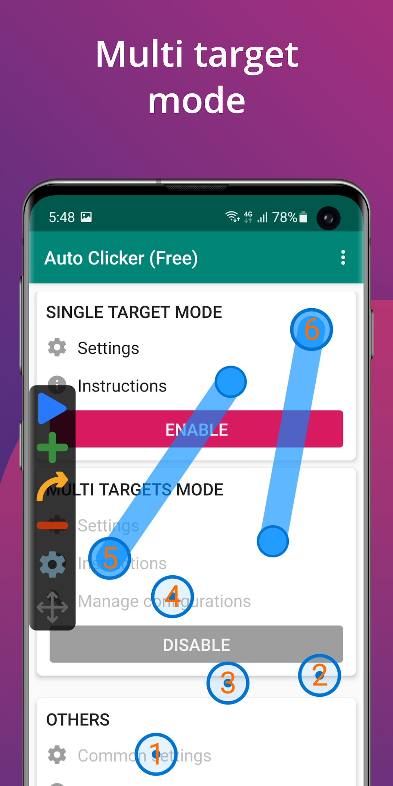

自动点击器横向挑了一圈，为什么最后留了这一款
自动点击工具市场上免费的、带广告的、需要 root 的版本一大堆，我把同类试了一轮之后留下的只有 Auto Clicker。这篇从定位、差异化到取舍，说清楚它凭什么。
自动点击器这个类目在安卓生态里不算新鲜事——挂机刷赞、游戏重复操作、表单批量填写，背后都能看到它的影子。但真正能让人长期用下去的并不多：要么功能残缺只能单点，要么界面丑到像上个时代的产物，要么跑一会儿就被系统杀后台，还有那堆每次启动先弹三秒钟广告的更是直接Pass。
我试过的同类工具里，大厂方案要么功能锁死只能单点连点、要么付费门槛高得离谱；系统自带的辅助点击又只够应付最基础的场景。Auto Clicker 的官网设计就很能说明它的定位——处在中间那个位置：功能深度够，界面也干净，而且不需要 root——这三点凑在一起就已经比市面上大多数竞品强出一截。但它最打动我的不是这些，而是几个别家要么没做、要么做了也不到位的细节。
随机落点：不止是防检测，更是让任务更稳
自动点击器默认把每次点击精确落在同一个坐标上，间隔也是分毫不差。这在纯功能性上没问题，但挂久了就容易出状况——某些应用会把过于规律的点击行为当作自动化操作来处理，轻则限流重则直接踢出。Auto Clicker 的防检测选项就是对着这个痛点来的：在设定半径内随机取点，每次落点在按钮范围内漂移，间隔也会做轻微的随机化。

这看起来是个小功能，实际用下来才发现它对稳定性的提升比想象中大。之前用别家工具挂同一个任务，挂一上午大概有两三次被目标应用判定异常；换成 Auto Clicker 开了防检测之后，连续跑几个小时没出过问题。而且这个功能不是锁死的——范围可以自己调，以按钮短边为上限就够了，太大反而会点到空白处落空。更多参数设置细节可以翻autoclicker文档。
多目标序列：从"点这里"到"做完一套"
单点模式只能反复戳同一个地方，现实里的需求往往是"先点 A 再点 B 然后滑一下 C"。Auto Clicker 的多目标模式就是解决这个的：在屏幕上摆多个带编号的目标点，每个目标可以是一次点击或一次滑动，整套序列按编号顺序循环执行。

布点的操作也很直观：按悬浮面板上的加号新增一个目标，拖到要操作的位置就行，摆错了直接拖过去不用删掉重来。更实用的是每个目标都能单独设置——滑动可以设方向、距离、时长，点击可以设次数和间隔。而且整套序列可以存配置，十个目标点重新摆一遍的代价太大，存下来之后换机重装都不怕。
悬浮面板：不挡画面的同时给足控制权
很多同类工具的控制面板要么是全屏的、要么嵌在应用主界面里，跑任务的时候想调整参数就得切出来，打断整个流程。Auto Clicker 的做法是做了一个独立的悬浮面板：播放键、增删目标、设置入口都在那块小面板上，拖到屏幕边缘就缩成一个小点，点开才展开。
这个设计看起来普通，但用起来的差别很明显——挂在那里的时候不挡主界面，想临时改某个目标的位置或间隔，直接在面板上操作就行，不用停止任务、不用切应用。权限的处理也比别家清楚：第一次启动就明确告诉你需要悬浮窗和无障碍两项权限，缺了哪项面板都出不来，排查路径写得很直白，不会让用户对着一个没反应的按钮瞎猜。
它的代价：门槛和边界
说了这么多优点，Auto Clicker 也不是没有代价。
上手门槛比单点工具高。悬浮窗权限、无障碍服务这两项对新手来说是两个陌生概念，安卓 7.0 以下的系统还装不上，建议直接去下载确认一下版本要求。而且多目标模式虽然灵活，但第一次布点的时候确实需要一点时间去适应编号顺序和节奏——摆完跑一轮发现步与步之间的间隔太长或太短，还要逐个调。
平台限制也是硬伤。它只做了安卓版本，iOS 上完全没踪影，PC 端也没有。如果你的设备是 iPhone 或 Windows，这款就直接排除了。
还有一点是功能取舍上的平衡：它没有内置图像识别，不能"看到"屏幕上出现某个按钮才去点——所有目标位置都是手动布点定死的。这意味着如果你的任务依赖界面变化来触发，比如"弹出提示框时点确定"，Auto Clicker 就帮不上忙，得找带图像匹配的工具。
选它还是选别的
什么样的人选 Auto Clicker：你有一台安卓手机，需要做的是固定位置的重复操作或组合操作，希望界面干净、不被广告骚扰，而且不想折腾 root。这种情况下它几乎是同价位里最合适的选择。
什么样的人选别的：如果你需要图像识别或 OCR，Auto Clicker 做不到；如果你只用 iOS，没得选；如果你对自动点击的稳定性没那么在意、又不想花时间调参数，那找个最简单的单点工具也够用。
我把同类工具试了一圈之后，Auto Clicker 是唯一让我愿意长期留在手机上的那个——它在该深的地方做得够深，该简单的地方也没过度设计。如果你也在挑，直接去它的官网看一眼就知道了。这套资料在GitHub、Gitee、GitCode三个仓库都同步维护着，从不同源拉取都方便。